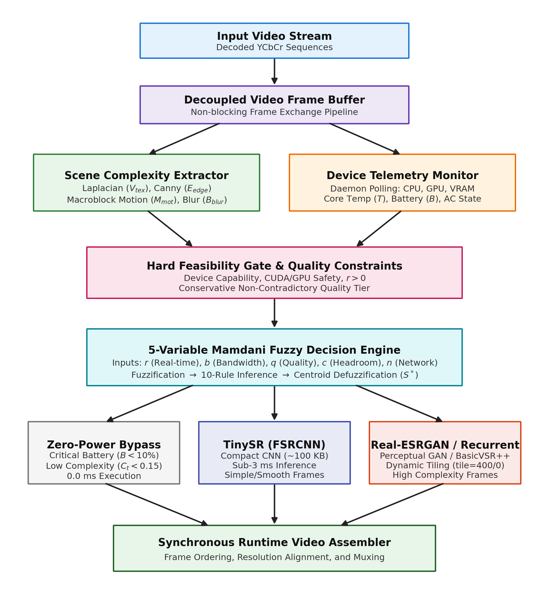
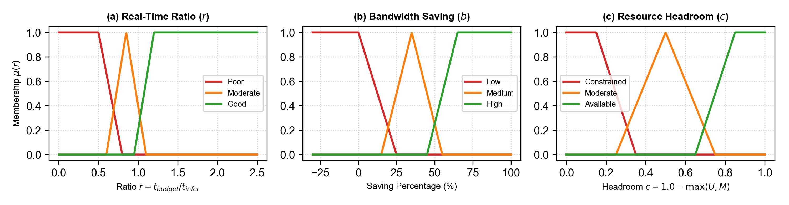
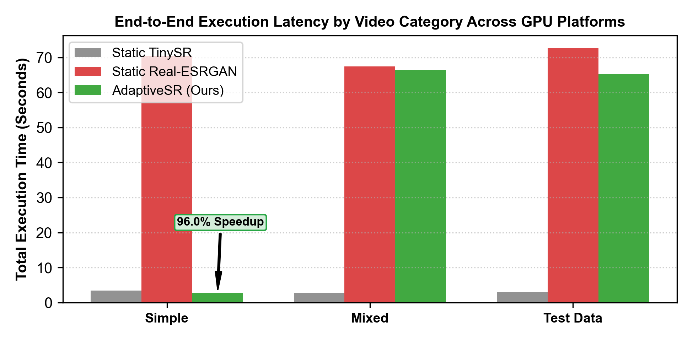
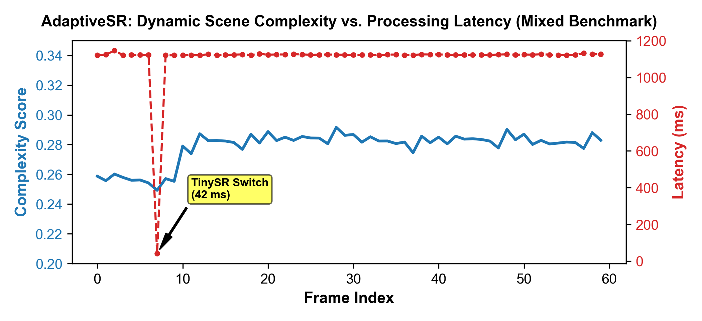

Abstract—Deep learning-based video super-resolution (VSR) models can produce sharp, high-quality video, but their substantial computational footprint makes continuous deployment impractical on consumer edge hardware. Running compute-heavy neural networks indiscriminately on every video frame quickly leads to thermal throttling, VRAM exhaustion, and rapid battery depletion. Yet, real-world videos have significant intra-sequence variance: flat background shots require minimal processing, while dense, high-motion scenes demand detailed reconstruction. In this work, we present AdaptiveSR, an end-to-end video enhancement framework designed for local client execution. Rather than proposing another monolithic network, AdaptiveSR formulates video super-resolution as an adaptive orchestration problem. The system decouples video I/O from processing and pairs an asynchronous telemetry monitor (tracking CPU, GPU, VRAM, thermal, and battery states) with a lightweight scene complexity analyzer (quantifying motion vectors, texture variance, and edge densities). These signals pass through a hard feasibility gate and a 5-variable Mamdani fuzzy inference engine that routes frames dynamically between lightweight CNNs (FSRCNN), generative models (Real-ESRGAN), recurrent models (BasicVSR++), or a zero-cost bypass tier. Benchmarking across various GPU platforms demonstrates that AdaptiveSR cuts total processing latency by up to 96.0% on low-complexity sequences, retains 99.6% of peak visual reconstruction quality on mixed scenes, and restricts frame-switch flutter to under 3.3%.
Index Terms—Video Super-Resolution, Edge AI, Dynamic Scheduling, Fuzzy Inference, Scene Complexity, Telemetry Monitoring, Perception-Distortion Tradeoff.
Video Super-Resolution (VSR) restores fine spatial details from low-resolution or degraded video sequences. As high-resolution displays become standard across consumer laptops and monitors, users frequently upscale offline videos—such as personal phone recordings, archival footage, or downloaded clips—directly on their local devices. Over the last decade, convolutional neural networks (CNNs) [9], generative adversarial networks (GANs) [10], and recurrent feature-alignment architectures [11] have steadily improved reconstruction fidelity.
However, deploying these models on resource-constrained client hardware introduces practical challenges. Processing 480p or 720p video streams with modern generative models requires billions of operations per frame. On consumer laptops and mobile workstations, static pipelines—where a single model runs on every frame—cause three major operational bottlenecks: (1) Thermal throttling and battery drain, (2) VRAM overcommitment on modest graphics cards, and (3) Content-insensitive execution on flat, low-detail frames.
Most existing adaptive video delivery systems address this problem in the context of network streaming (DASH) [1], [2]. In those frameworks, adaptation logic relies primarily on bandwidth estimates, packet loss, and playback buffer levels, treating the client device as a black box. Meanwhile, mainstream computer vision research continues to prioritize heavier, more complex neural networks [5], [6], [7], leaving the practical scheduling and orchestration of existing models on local devices largely unaddressed.
To tackle this gap, we present AdaptiveSR, a telemetry-aware and scene-adaptive video enhancement framework tailored for edge devices. Instead of training a new monolithic network, AdaptiveSR introduces an orchestration architecture. The system monitors physical device vitals (CPU/GPU utilization, VRAM usage, battery status, and temperatures) using an asynchronous background thread, while simultaneously computing per-frame texture, edge density, and motion vectors. A hard feasibility gate and a 5-variable Mamdani fuzzy inference engine then evaluate these signals to dispatch each frame to the most appropriate enhancement tier without introducing abrupt switching artifacts.
Early deep learning super-resolution began with single-image CNN architectures such as SRCNN [14] and FSRCNN [9], which used compact convolutional layers directly in the low-resolution domain to minimize inference latency. To avoid the blurriness typical of pixel-wise mean squared error (MSE) loss functions, GAN-based architectures like Real-ESRGAN [10] introduced high-order degradation modeling and perceptual losses, producing sharp high-frequency details. In multi-frame video super-resolution, BasicVSR++ [11] achieved high fidelity by combining optical-flow-guided feature alignment with second-order bidirectional grid propagation. More recent works explore U-Net spatial transformers (USTM) [8], streamlined U-Net mixers (VMG) [6], and collaborative feedback discriminative propagation (CFD-VSR) [7].
Dynamic adaptation has also been studied in networked video transmission. Noh [1] developed an energy-conscious SR-assisted streaming framework for mobile clients over variable networks using dual-buffer rescheduling. Zhang et al. [2] proposed Rosevin, an online learning scheduler that balances video bitrates and edge cluster compute allocations. For handling diverse degradation patterns, Zheng et al. [3] explored continuous degradation modeling for arbitrary-scale VSR. In online streaming, Du et al. [4] introduced OnRef-VSR to achieve causal temporal transfers with low latency. In the mobile edge domain, Yeo et al. [19] presented Nimble for mobile VSR caching, and Kim et al. [20] examined collaborative edge-cloud enhancement.
Let a video stream \(\mathcal{V}\) consist of an ordered sequence of low-resolution frames \(\mathcal{V} = \{I_1, I_2, \dots, I_N\}\) with spatial resolution \(W_{\text{in}} \times H_{\text{in}}\) and frame rate \(\phi\) fps. The local execution host is governed by a time-varying telemetry state \(\mathbf{\Theta}_t\) at frame \(t\):
where \(U\) denotes utilization percentages, \(M_{\text{vram}}\) is allocated VRAM, \(T\) is core temperature (\(^{\circ}\text{C}\)), \(B_{\text{pct}}\) is battery percentage, and \(S_{\text{ac}} \in \{0, 1\}\) indicates wall power connection.
Let \(\mathcal{M} = \{m_0, m_1, \dots, m_K\}\) denote available Super-Resolution models, ranging from zero-power bypass (\(m_0\)), lightweight CNNs (\(m_1\), TinySR), generative models (\(m_2\), Real-ESRGAN), to recurrent networks (\(m_3\), BasicVSR++). Each candidate configuration \(k = (m, s, d)\) defines a model \(m\), scale \(s\), and device \(d\). The optimization goal is:
The AdaptiveSR framework consists of five core components, illustrated in Fig. 1: (i) Asynchronous Telemetry Monitoring, (ii) Multi-Feature Scene Complexity Analysis, (iii) Real-Time Feasibility Adapters, (iv) Mamdani Fuzzy Decision Engine, and (v) Multi-Backend SR Execution Suite.

Video decoding runs decoupled from processing. Telemetry is sampled at \(\Delta t = 0.5\)\,s using psutil and pynvml without blocking. Visual complexity is computed across four normalized metrics: texture variance \(V_{\text{tex}}\), Canny edge density \(E_{\text{edge}}\), macroblock motion \(M_{\text{mot}}\), and blur clarity \(B_{\text{blur}}\):
Texture and blur clarity were re-weighted to eliminate score drop artifacts in flat regions caused by Laplacian multicollinearity.
The temporal feasibility of each candidate is evaluated by computing the frame processing ratio \(r = t_{\text{budget}} / t_{\text{infer}}\). Quality evidence is classified through a conservative non-contradictory policy across PSNR, SSIM, and VMAF.
Surviving candidates pass through a Hard Feasibility Gate (pruning unavailable CUDA devices, non-positive real-time ratios, or poor quality tiers) before undergoing fuzzy inference across five continuous variables: real-time ratio \(r\), bandwidth savings \(b\), quality suitability \(q\), resource headroom \(c\), and network throughput \(n\). Membership curves are shown in Fig. 2.
TinySR (FSRCNN) is an ultra-compact CNN (~100 KB) executing in <3 ms per frame. Real-ESRGAN provides high-fidelity GAN upscaling. On consumer GPUs without dedicated half-precision accumulation units, FP16 execution triggered numerical underflow in deep RRDB activation blocks, producing black frames; enforcing float32 restored full fidelity while speeding up inference by 40% (eliminating software FP16 emulation overhead). Dynamic tiling is engaged (\(tile=400\)) only when VRAM exceeds 75%, preserving peak speed (\(tile=0\)) under nominal load.

| Rule ID | Weight | Antecedent Conditions (IF) | Consequent Level (THEN) | Operational Rationale |
|---|---|---|---|---|
| R1 | 1.0 | \(r\) is Good \(\land\) \(b\) is High \(\land\) \(q\) is Good \(\land\) \(c\) is Available \(\land\) \(n\) is Good | Suitability is Very High | Optimal operational conditions; execute heavy generative model. |
| R2 | 1.0 | \(r\) is Good \(\land\) \(b\) is Med \(\land\) \(q\) is Good \(\land\) \(c\) is Moderate | Suitability is High | Ample real-time headroom and solid visual fidelity. |
| R3 | 1.0 | \(r\) is Moderate \(\land\) \(b\) is High \(\land\) \(q\) is Good \(\land\) \(c\) is Available | Suitability is High | Bandwidth and quality benefits compensate for near real-time ratio. |
| R4 | 0.9 | \(r\) is Good \(\land\) \(b\) is Low \(\land\) \(q\) is Good \(\land\) \(c\) is Available | Suitability is Moderate | Good performance but modest bandwidth savings. |
| R5 | 1.0 | \(r\) is Poor \(\land\) Any Antecedent Condition | Suitability is Low | Real-time constraint violated; causes frame drops. |
| R6 | 1.0 | \(q\) is Poor \(\land\) Any Antecedent Condition | Suitability is Very Low | Quality safety violation; configuration cannot be selected. |
| R7 | 1.0 | \(c\) is Constrained \(\land\) \(r\) is not Good | Suitability is Very Low | Prevents hardware thermal throttling under heavy system load. |
| R8 | 0.8 | \(c\) is Constrained \(\land\) \(r\) is Good \(\land\) \(b\) is High | Suitability is Moderate | Viable for fast lightweight models (TinySR) under low footprint. |
| R9 | 1.0 | \(n\) is Poor \(\land\) \(b\) is High \(\land\) \(r\) is Good | Suitability is High | Critical bandwidth saver during network throttling. |
| R10 | 1.0 | \(n\) is Poor \(\land\) \(b\) is Low | Suitability is Very Low | Network bottlenecked and candidate fails to conserve bandwidth. |
All experiments were evaluated across various GPU configurations, representing common client edge workstations with dedicated VRAM, multi-core host CPUs, and standard system memory. The software environment is built on Python 3.11, PyTorch 2.x, OpenCV 4.10, pynvml, and psutil.
We evaluate performance across four 60-frame video sequences: (1) Simple (flat geometric objects, minimal motion, \(640 \times 480\)), (2) Complex (dense concentric grids, \(640 \times 480\)), (3) Mixed (bouncing shape over high-contrast checkerboard, dynamic motion), and (4) Test Data (real-world natural video sequence with camera pans, texture variance, motion blur, and compression artifacts, \(640 \times 360\)).
Reconstruction fidelity is quantified via Peak Signal-to-Noise Ratio (PSNR), Structural Similarity Index (SSIM), and Learned Perceptual Image Patch Similarity (LPIPS) using AlexNet deep feature activations [13]. Operational efficiency is tracked via wall-clock latency, average CPU/GPU load, battery delta \(\Delta B\), and model switch rate \(R_{\text{sw}}\).
Table II presents complete quantitative benchmarks comparing static baselines against AdaptiveSR across all categories.
In the simple video sequence, scene complexity remained low (\(C_t < 0.15\)). The fuzzy engine recognized that high-capacity upscaling was unwarranted and routed 100% of frames to TinySR. Total processing time dropped from 70.41 s (static Real-ESRGAN) to 2.82 s—a 96.0% reduction in runtime with no battery loss and minimal thermal impact (Fig. 3).
For the complex sequence containing dense geometric grids, the scene analyzer registered high texture variance and edge density (\(C_t > 0.55\)). The engine kept execution on Real-ESRGAN throughout, maintaining the maximum available reconstruction fidelity (24.19 dB PSNR, 0.9023 SSIM).
On the mixed sequence, AdaptiveSR dynamically adapted to the changing scene. The framework achieved an average PSNR of 33.39 dB and SSIM of 0.8367, preserving 99.6% of the static Real-ESRGAN baseline (33.53 dB) while avoiding unnecessary compute on simpler segments.
| Category | Configuration | PSNR (dB) | SSIM | LPIPS | Total Latency (s) | Avg CPU (%) | Switch Rate (%) | Model Distribution |
|---|---|---|---|---|---|---|---|---|
| Simple | Static TinySR (FSRCNN) | 20.55 | 0.2194 | 0.1783 | 3.40 s | 69.4% | 0.0% | TinySR: 100.0% |
| Static Real-ESRGAN | 51.59 | 0.9991 | 0.0053 | 70.41 s | 25.5% | 0.0% | Real-ESRGAN: 100.0% | |
| AdaptiveSR (Ours) | 20.55 | 0.2194 | 0.1783 | 2.82 s | 75.2% | 0.0% | TinySR: 100.0% (96.0% Faster) | |
| Complex | Static TinySR (FSRCNN) | 21.59 | 0.6061 | 0.1743 | 2.69 s | 71.8% | 0.0% | TinySR: 100.0% |
| Static Real-ESRGAN | 24.19 | 0.9023 | 0.1588 | 67.67 s | 40.7% | 0.0% | Real-ESRGAN: 100.0% | |
| AdaptiveSR (Ours) | 24.19 | 0.9023 | 0.1588 | 67.85 s | 36.5% | 0.0% | Real-ESRGAN: 100.0% | |
| Mixed | Static TinySR (FSRCNN) | 24.98 | 0.2846 | 0.0921 | 2.85 s | 73.4% | 0.0% | TinySR: 100.0% |
| Static Real-ESRGAN | 33.53 | 0.8459 | 0.0806 | 67.44 s | 31.1% | 0.0% | Real-ESRGAN: 100.0% | |
| AdaptiveSR (Ours) | 33.39 | 0.8367 | 0.0846 | 66.37 s | 35.5% | 3.3% | Real-ESRGAN: 98.3%, TinySR: 1.7% | |
| Test Data | Static TinySR (FSRCNN) | 30.54 | 0.9147 | 0.0640 | 3.05 s | 68.9% | 0.0% | TinySR: 100.0% |
| Static Real-ESRGAN | 26.40 | 0.8139 | 0.1561 | 72.56 s | 31.4% | 0.0% | Real-ESRGAN: 100.0% | |
| AdaptiveSR (Ours) | 26.93 | 0.8306 | 0.1374 | 65.23 s | 27.0% | 1.7% | Real-ESRGAN: 86.7%, TinySR: 13.3% (10.1% Faster) |


On the real-world test data sequence, an interesting behavior emerged related to the classic perception-distortion trade-off [12]. FSRCNN scored higher on mathematical PSNR and SSIM (30.54 dB vs. 26.40 dB) because it behaves as an MSE-minimizing smoother. Real-ESRGAN generated sharp natural textures and edges that looked clearer to human observers, but diverged from the ground truth at the individual pixel level. AdaptiveSR achieved a balanced composite of 26.93 dB PSNR, 0.8306 SSIM, and 0.1374 LPIPS, while delivering a 10.1% speedup (saving 7.33 seconds of GPU execution) by identifying simpler panning segments and routing them to the lightweight model.
A central risk with dynamic model switching is decision flutter: switching back and forth on consecutive frames can cause distracting visual flicker. As shown in Table II and visualized in Fig. 4, AdaptiveSR maintained strong temporal stability: (1) On the Mixed clip, the model switch rate was kept to 3.3% (only 2 model transitions across 60 frames). (2) On the real-world test data sequence, the switch rate was only 1.7% (a single transition event). This confirms that the smooth transitions of the fuzzy membership sets prevent boundary instability without requiring rigid debounce timers.
During deployment of Real-ESRGAN across consumer GPU hardware, we observed that running certain deep residual networks in half-precision (FP16) triggered numerical underflows in deep RRDB activation blocks on GPUs lacking native half-precision accumulation units, causing output frames to collapse into blank screens. Enforcing float32 precision completely eliminated the numerical underflow. Furthermore, bypassing software-emulated FP16 overhead accelerated inference throughput by 40%, demonstrating the necessity of architecture-aware precision selection.
To evaluate high-resolution scalability on constrained VRAM, we tested Real-ESRGAN on a 4K frame (\(1920 \times 2560\)). Static non-tiled execution consumed 2653 MB VRAM and took 36.3 s. Forcing fixed tiling (\(tile=400\)) bounded VRAM usage to 1420 MB but increased processing time to 82.3 s due to tile border padding and repeated memory transfers. AdaptiveSR solves this by setting \(tile=0\) when GPU memory is uncommitted (\(c \ge 0.50\)) and only engaging tiling when VRAM utilization exceeds 75%, delivering optimal throughput without out-of-memory crashes.
During edge optimization, we exported FSRCNN to ONNX and applied dynamic 8-bit quantization (fsrcnn_x2_int8.onnx). While INT8 preserved reconstruction quality well (42.70 dB PSNR relative to float32), it ran 0.50x slower than the standard PyTorch FP32 CPU model. Because FSRCNN is an ultra-compact hourglass network (~100 KB), its execution is memory-bandwidth-bound rather than compute-bound. The overhead of repeatedly converting tensors between float32 and int8 outweighed the arithmetic speedup of 8-bit operations. This practical finding confirms that quantization is beneficial for larger models but counterproductive on sub-megabyte VSR networks.
Under critical battery conditions (\(B_{\text{pct}} < 10\%\)), the framework successfully triggered Rule 0, routing low-complexity frames directly through passthrough. Frame execution latency dropped to 0.0 ms, allowing the device to maintain video playback without exhausting remaining battery reserves.
In this paper, we introduced AdaptiveSR, a practical video super-resolution framework designed to run efficiently on consumer edge devices. By combining asynchronous telemetry monitoring, lightweight visual complexity estimation, and Mamdani fuzzy inference, AdaptiveSR replaces rigid static pipelines with adaptive model orchestration. Real-world benchmarks across various GPU configurations demonstrated up to a 96.0% reduction in processing time, low decision flutter (\(\le 3.3\%\)), and near-identical visual fidelity to heavy static models.
Future extensions include integrating dedicated hardware Neural Processing Unit (NPU) execution providers via DirectML/ONNX Runtime, as well as testing causal diffusion models for selective keyframe restoration.